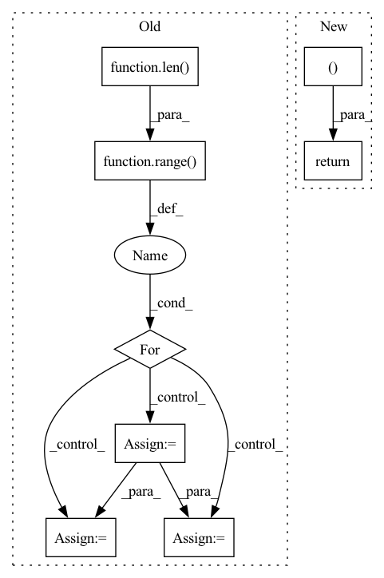

Pattern ID :7038

Before Change
// Symbolically refine all N steps
tightened_output_constraints = []
N = len(output_constraints)
for t in range(2, N + 1):
// N-step analysis accepts as input:
// [1st output constraint, {2,...,t} tightened output constraints,
// dummy output constraint]
output_constraints_better = deepcopy(output_constraints[:1])
output_constraints_better += deepcopy(tightened_output_constraints)
output_constraints_better += deepcopy(output_constraints[:1]) // just a dummy
output_constraint, _ = self.get_N_step_reachable_set(
input_constraint, output_constraints_better, infos[:t]
)
tightened_output_constraints.append(output_constraint)
After Change
output_constraints.append(deepcopy(output_constraint))
infos.append(info)
return output_constraints, infos
def get_one_step_backprojection_set(self, output_constraint, intput_constraint):
raise NotImplementedError
In pattern: SUPERPATTERN
Frequency: 3
Non-data size: 8
Instances
Fragment ID: 23434101
Project Name: mit-acl/nn_robustness_analysis
Commit Name: 695fdd909337e53b51591e713482ac08e209f494
Time: 2022-01-04
Author: mfe@mit.edu
File Name: nn_closed_loop/nn_closed_loop/propagators/ClosedLoopPropagator.py
M Class Name: ClosedLoopPropagator
N Class Name: ClosedLoopPropagator
M Method Name: get_reachable_set(4)
N Method Name: get_reachable_set(4)
M Parent Class: propagators.Propagator
N Parent Class: propagators.Propagator
M File Name: nn_closed_loop/nn_closed_loop/propagators/ClosedLoopPropagator.py
N File Name: nn_closed_loop/nn_closed_loop/propagators/ClosedLoopPropagator.py
M Start Line: 16
M End Line: 57
N Start Line: 16
N End Line: 32
'>
Before Change
criterion = self.criterion
patterns = self.patterns
P = len(patterns)
possible_loss = None
for idx in range(P):
pattern = patterns[idx]
loss = self.criterion(input, target[:,pattern], batch_mean=False)
if possible_loss is None:
possible_loss = loss.unsqueeze(dim=1)
else:
possible_loss = torch.cat([possible_loss, loss.unsqueeze(dim=1)], dim=1)
// possible_loss (batch_size, P)
if self.criterion.maximize:
After Change
loss, pattern = pit(self.criterion, input, target, patterns=self.patterns)
return loss, pattern
class PIT1d(PIT):
def __init__(self, criterion, n_sources):
'>
Fragment ID: 23434100
Project Name: tky823/dnn-based_source_separation
Commit Name: 876792016e1ada4bfa3f8cc712c259887baa9829
Time: 2020-09-01
Author: delta9guitar97@gmail.com
File Name: src/criterion/pit.py
M Class Name: PIT
N Class Name: PIT
M Method Name: __call__(4)
N Method Name: __call__(4)
M Parent Class:
N Parent Class:
M File Name: src/criterion/pit.py
N File Name: src/criterion/pit.py
M Start Line: 27
M End Line: 48
N Start Line: 65
N End Line: 67
'>
Before Change
xyz, point_features = torch.split(points, [3, 1], dim=-1)
keypoints_xyz, keypoints_features = self.sample_keypoints(xyz, point_features)
out = [(point_features, xyz)] + out
for i in range(len(self.cfg.strides)):
voxel_features_i, voxel_coords_i = out[i]
voxel_coords_i = voxel_coords_i.unsqueeze(0).contiguous()
voxel_features_i = voxel_features_i.unsqueeze(0).permute(0, 2, 1).contiguous()
keypoints_xyz = keypoints_xyz.unsqueeze(0).contiguous()
_, out = self.pnets[i](voxel_coords_i, voxel_features_i, keypoints_xyz)
return out
After Change
points, features, coordinates, voxel_population = self.voxelize(points)
cnn_out = self.cnn(features, coordinates, batch_size=1)
point_xyz, point_features = torch.split(points, [3, 1], dim=-1)
cnn_out = [(point_xyz, point_features)] + cnn_out
keypoint_xyz, keypoint_features = self.sample_keypoints(point_xyz, point_features)
keypoint_xyz = keypoint_xyz.unsqueeze(0).contiguous()
pnet_out = self.pnet_forward(cnn_out, keypoint_xyz)
return pnet_out
def main():
'>
Fragment ID: 23434103
Project Name: jhultman/vision3d
Commit Name: 1d8a72fc38c04ef4a2ca6516f91c20cd89d4b46d
Time: 2020-02-03
Author: 27909223+jhultman@users.noreply.github.com
File Name: pvrcnn/main.py
M Class Name: PV_RCNN
N Class Name: PV_RCNN
M Method Name: forward(2)
N Method Name: forward(2)
M Parent Class: nn.Module
N Parent Class: nn.Module
M File Name: pvrcnn/main.py
N File Name: pvrcnn/main.py
M Start Line: 141
M End Line: 151
N Start Line: 161
N End Line: 167